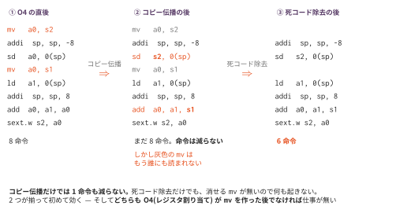

コピー伝播と死コード除去 — 順番が結果を決める
今日のゴール
O4 が残した mv a0, s1 の連なりを消す。
そして「同じパスでも、前に何を掛けたかで効果が変わる」ことを、測って確かめる。
この回の位置づけ
| 項目 | 内容 |
|---|---|
| 必須の前提 | O1（測定基盤）、O2（フローグラフ）、O4（これが無いと消す対象の mv が出てこない）、O5（生存解析） |
| 推奨の前提 | O3（命令選択）。実質必須に近い。資料の「測ってみると」の比較表が「isel だけ」を基準にしているので、O3 が無いと表と突き合わせられない |
| 改変しない | mycc.py、scaffold/、optcc.py |
| 編集する | copyprop.py、dce.py |
| 完了条件 | check.py の全 Step が PASS になり、golden.py が fixed17 全通と4構成の比較表を報告する |
| コマ数 | 2 |
| 備考 | 最適化発展シリーズの第6回。コマ1は copyprop.py（Step 1〜3）、コマ2は dce.py（Step 4〜6） |
2コマの区切りは次のとおりである。
| コマ | やること | 到達点 |
|---|---|---|
| 1 | copyprop.py（Step 1〜3） |
check.py が PASS。ただし命令はまだ1つも減らない |
| 2 | dce.py（Step 4〜6） |
4構成の比較表が出る |
いま残っているもの
O4 の後、s = s + i はこうなっている。
mv a0, s2 # s を読む
addi sp, sp, -8
sd a0, 0(sp)
mv a0, s1 # i を読む
ld a1, 0(sp)
addi sp, sp, 8
add a0, a1, a0
sext.w s2, a0 # s へ書くadd が足しているのは、結局 s2 と s1 の値である。
a0 を経由する必要はない。
コピー伝播
mv rD, rS の後で rD を読んでいる箇所を、rS に置き換える。

コピー伝播だけでは、命令は1つも減らない。
mv は残ったままである。減らすのは次の死コード除去の仕事で、
コピー伝播はその機会を作るだけである。
コマ1の終わりで golden.py を走らせると効果がゼロに見えるが、それで正しい。
打ち切る条件
置き換えてよいのは、mv を実行したときの値がまだ有効な間だけである。
途中でどちらかのレジスタが書き換えられたら、そこで打ち切る。
mv a1, s1
li s1, 0 # ← 元のレジスタが変わった
add a0, a1, a1 # ここで a1 を s1 に置き換えたら、値が違う mv a1, s1
li a1, 0 # ← 置き換え先が変わった
add a0, a1, a1 # この a1 はもう s1 のコピーではないcopy_prop_block は、命令を1つ見るたびに
「書き込み先が絡む表の項目を消す」ことでこれを実現する。
ブロックをまたがない。 またぐには「この地点にどの定義が届くか」を知る必要があり、 それは到達定義解析という別の解析になる（O5 の枠組みで書ける。発展課題）。
死コード除去
O5 の live_after を使う。書いた値が誰にも読まれない命令は消してよい。
書き込み先 ∩ 直後の生存集合 = ∅ → 消せるただし、副作用のある命令は消せない。
| 命令 | 消せるか | 理由 |
|---|---|---|
add a0, a1, a2 |
消せる可能性 | a0 が読まれなければ不要 |
sw a0, -24(s0) |
消せない | レジスタには書かないが、メモリを書き換える |
call f |
消せない | 何をするか分からない |
beqz / j / ret |
消せない | 制御の流れを変える |
sw が危ないのは、生存解析から見ると「書き込み先が空集合」なので
必ず死んでいるように見えるためである。特別扱いが要る。
エピローグの復帰も消えてはいけない。
.L1:
ld s1, -40(s0) # s1 は「この先で読まれない」ように見える
ld s0, 32(sp)
retret の use に callee-saved を入れておかないと、この ld が死コードとして消える。
消えると呼び出し元の s1 が壊れる。
main だけのプログラムでは気づかない。関数を呼ぶプログラムで、
呼び出し元のループ変数が壊れて無限ループになるという形で表面化する。
s1〜s11 を無条件にではなく、O5 の restored_saved が関数ごとに数える
「実際に復帰する callee-saved」が ret の use に入る設計がここで効いてくる。
繰り返す理由
1つ消すと、その命令が読んでいた値が誰にも読まれなくなり、別の命令が新たに死ぬ。
mv a1, s1 # 2周目で死ぬ
add a0, a1, a1 # 1周目で死ぬ(a0 が後で上書きされるとき)
li a0, 7だから、消せる命令が無くなるまで繰り返す。
実装
| Step | ファイル | 実装対象 |
|---|---|---|
| 1 | copyprop.py |
replace_uses（読んでいる側だけ置き換える） |
| 2 | copyprop.py |
copy_prop_block（打ち切り条件が肝） |
| 3 | copyprop.py |
run |
| 4 | dce.py |
has_side_effect |
| 5 | dce.py |
is_dead |
| 6 | dce.py |
run（消えなくなるまで繰り返す） |
B=../O1_measure/bench/loop_sum.c
python3 ../optcc.py --regalloc --passes isel,copyprop,dce $B
python3 ../optcc.py --passes isel,copyprop,dce $B2つ目（レジスタ割り当てなし）がほとんど何も減らないことを、自分で確かめてほしい。
テスト
python3 check.py # 各関数の単体テスト(未実装は SKIP)
python3 golden.py # fixed17 + 4構成の比較表golden.py は、まず fixed17 の全通で
意味を壊していないことを確かめてから、4構成の比較表を出す。
測ってみると
数字はすべて O1 の全構成の基準表の
+regalloc 列と +copyprop,dce 列である。この回はその差分を作る。
まず、O4 の後にこの回をかけた効果。
ベンチマーク 静的:O4後 +O6 削減 動的:O4後 +O6 削減
bubble 264 234 11.4% 18824 16161 14.1%
fib_rec 73 72 1.4% 69061 69060 0.0%
loop_sum 49 44 10.2% 5032 4230 15.9%
matmul 344 309 10.2% 21589 18814 12.9%
strops 192 176 8.3% 59877 51875 13.4%
合計 922 835 9.4% 174383 160140 8.2%そして、この回の主題である順番の効果。
2行目だけが基準表に無い構成（レジスタ割り当てを外して copyprop,dce をかけたもの）で、
残りの3行は基準表の +isel / +regalloc / +copyprop,dce 列そのものである。
構成 静的 削減 動的 削減
isel だけ(基準) 1075 0.0% 190337 0.0%
isel,copyprop,dce 1074 0.1% 190336 0.0% ← 割り当てなし
regalloc + isel 922 14.2% 174383 8.4%
regalloc + 全部 835 22.3% 160140 15.9%まったく同じ copyprop,dce が、1075命令中1命令しか減らせない場合と、
87命令減らせる場合がある。 違いは「前にレジスタ割り当てを掛けたかどうか」だけである。
レジスタ割り当ての前は、値がすべてスタックを経由するので mv がほとんど出てこない。
消す対象が無いのだから、どんなに正確な解析をしても結果は変わらない。
O4 が O6 の仕事を作っている。 これを phase ordering という。
正確な解析は畳み込みを増やすか — O3 の宿題
同じ論点が、もう1つ持ち越されている。
O3 の is_dead_after は、ラベルや分岐に出会うと「ブロックを出るので判断できない」と
答えて畳み込みをあきらめる、前向きの1パス走査だった。
O2 のフローグラフと O5 の生存解析があれば、ブロックを越えて正確に答えられる。
では、正確にすれば畳める箇所は増えるのか。
数えれば分かる。is_dead_after が返した答えを、理由別に分類する。
対象: bench 5本 + fixed17 17本 = 22本（素の出力に isel をかける）
畳めない（そのレジスタが後で読まれる） 543回
畳める （読まれる前に上書きされる） 25回
畳めない（ブロック境界で判断がつかない） 0回 ← 正確にすれば救える分0回である。 つまり O5 の生存解析を持ち込んでも、この3つの畳み込みが 増える箇所は1つも無い。いまのコード生成が出すアドレス計算と load/store は、 必ず同じ基本ブロックの中で完結しているからである。
# 自分でも確かめられる。O3 の is_dead_after に print を1行入れて、
# 「ブロック境界で return False した」回数を数えるO4 → O6 は「前のパスが次のパスの機会を作った」例だった。 O5 → O3 は「解析を正確にしても機会が増えなかった」例である。 解析の精度と最適化の効きは、別の話である。 どちらなのかは、設計を議論しても分からない。数えるしかない。
発展課題
- 順番を入れ替える:
dce,copypropの順にすると結果は変わるか。copyprop,dce,copyprop,dceと2回繰り返すとどうなるか - ストア転送:
sd a0, 0(sp)の直後にld a1, 0(sp)があれば、mv a1, a0にできる。すると push/pop が死ぬ。B2（レジスタスタック）と 同じ効果が、解析から導ける - 到達定義解析: ブロックをまたぐコピー伝播に必要な、前向きの解析。 O5 の枠組みで書ける。方程式はどうなるか
fib_recが 0.0% の理由: O4 が昇格しなかったのでmvが出ていない。 O4 のworth_promotingを無効にして測ると、この回の効果はどう変わるか- どこまで減るか:
regalloc + isel,copyprop,dce,layoutを測る。 残った命令のうち、まだ無駄に見えるものはあるか
コラム: 最適化の順番には「正解」が無い。 A を先にかけると B の機会が増え、B を先にかけると A の機会が増える —— という 関係はよくある。どちらを先にするかで結果が変わり、 しかもプログラムによって最適な順番が違う。
実在のコンパイラは、経験的に決めた順番でパスを並べ、
同じパスを何度も繰り返しかける（LLVM の -O2 は数十個のパスを決まった順に走らせる）。
「最適な順番を求める」問題自体が難しいので、
実務では測って決める。この回でやったことが、まさにそれである。